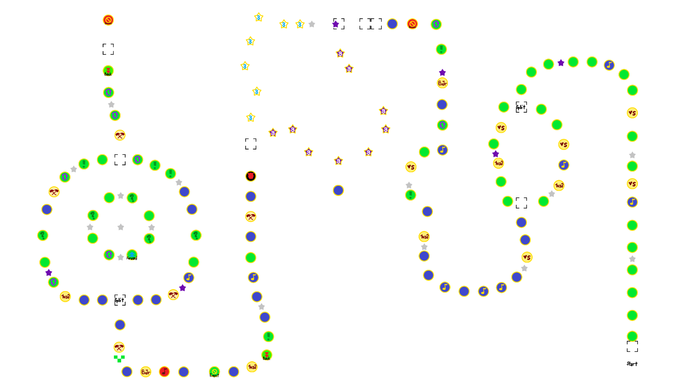
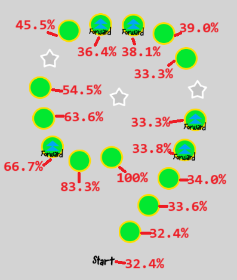

Toad Road
The Mario Party 9 introductory
Board Layout

Spaces count (all split paths)
Start: 1
Boss Space: 1
Dice Space: 30
Backward Space: 2
Lucky Space: 9
Unlucky Space: 1
"Almost there" checkpoint: 1
Spin Space: 6
Ministar spot: 19
miniztar: 6
Battle Space: 5
Mid-Boss Spacee: 1
1v2/3 Space: 5
Bowser Jr Minigame Space: 2
Split path confirmation: 2
Blank Space (Path guiding): 8
Shuffle Space: 8
Dash Space: 6
4v Minigame Space: 6
Happening Space: 5
Green Space: 40
Captain Event Space: 1
Bowser Space: 1
Mini Ztar Space (3): 7
Mini Star Space (3): 9
General Tips and strategy
- Do not use special dice to land on Pipe Lucky Spaces. Maximum ministars that can be gotten by landing on it is only 3. Save the special dice for other purposes.
-
Broken bridge: Probability of succeeding:
| No. of players | Probability | Total of dice rolls required |
|---|
| 4 | 54.5% | 16 |
| 3 | 59.7% | 12 |
| 2 | 65.0% | 8 |
- Overall a more luck-based board, with little strategy involved.
Captain Event
9 Island
- Players take turn to roll a dice
- Turn order decided by captain
- Whoever reached the centre will get 10 ministars
Tips and strategies
- Not really worthwhile to waste time straligising it, as the maximum a player can get is 16 ministars, which can be easily obtained on the board, especially near the end of the board.
-
Probability of reaching the end at space:

- Captain's Guide:
- Put the top enemy of yours as the first to roll the die. They only have a 32.4% chance of winning it all.
- Refer to the image above to determine whether it is your turn to roll the die.
- MATH HELP: From the start, the probability of gaining 3 ministars is 3/6, or 13/16, or 18/21, or... something else? IDK, never thought probability would get THIS hard.